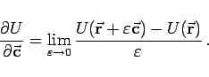
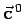
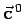
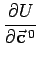
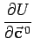
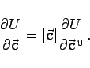
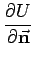
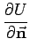
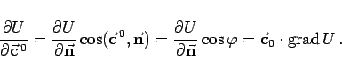

Inhalt Index DeskTop Bronstein

 Vektoranalysis und Feldtheorie Räumliche Differentialoperationen Richtungs- und Volumenableitung
Vektoranalysis und Feldtheorie Räumliche Differentialoperationen Richtungs- und Volumenableitung


Die Richtungsableitung des skalaren Feldes  in einem Punkt P mit dem Ortsvektor
in einem Punkt P mit dem Ortsvektor  nach einem Vektor
nach einem Vektor  (s. Abbildung)
(s. Abbildung)
ist definiert als Grenzwert des Quotienten
|  | (13.27) |
Wenn die Ableitung des Feldes  in einem Punkt
in einem Punkt  nach der Richtung des Einheitsvektors  von
nach der Richtung des Einheitsvektors  von  mit  bezeichnet wird, dann besteht zwischen den Ableitungen der Funktion nach dem Vektor
mit  bezeichnet wird, dann besteht zwischen den Ableitungen der Funktion nach dem Vektor  und nach seinem Einheitsvektor in ein und demselben Punkt die Beziehung
und nach seinem Einheitsvektor in ein und demselben Punkt die Beziehung
|  | (13.28) |
Die Ableitung nach dem Einheitsvektor ist ein Maß für die Stärke, mit der die Funktion U in Richtung vom Punkt  aus anwächst. Unter allen Ableitungen in einem Punkt nach den verschiedenen Richtungen der Einheitsvektoren besitzt die Ableitung  den größten Wert. Dabei ist
aus anwächst. Unter allen Ableitungen in einem Punkt nach den verschiedenen Richtungen der Einheitsvektoren besitzt die Ableitung  den größten Wert. Dabei ist  der Normaleneinheitsvektor zur Niveaufläche, auf der der Punkt
der Normaleneinheitsvektor zur Niveaufläche, auf der der Punkt  liegt. Zwischen den Richtungsableitungen bezüglich
liegt. Zwischen den Richtungsableitungen bezüglich  und einer beliebigen Richtung besteht der Zusammenhang
und einer beliebigen Richtung besteht der Zusammenhang
|  | (13.29) |